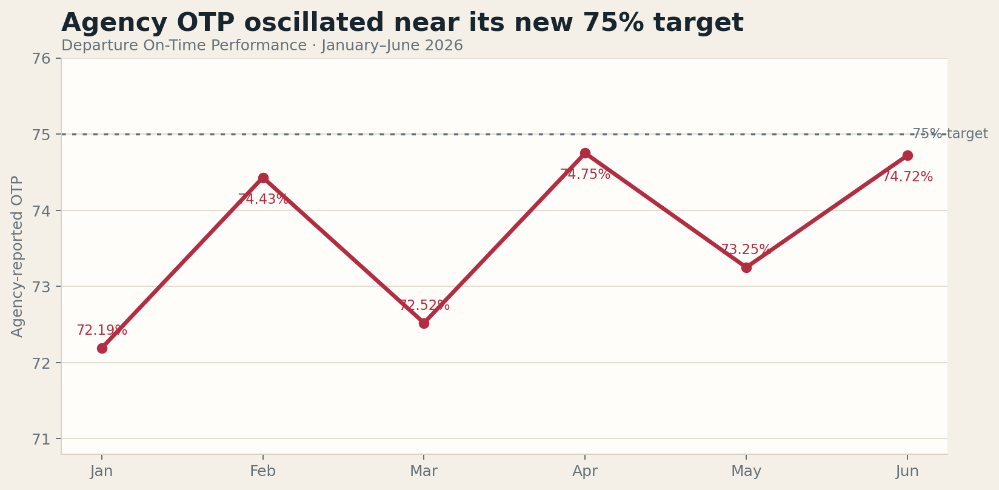
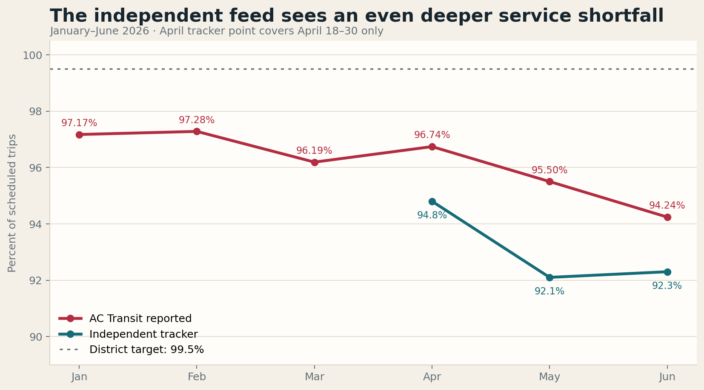
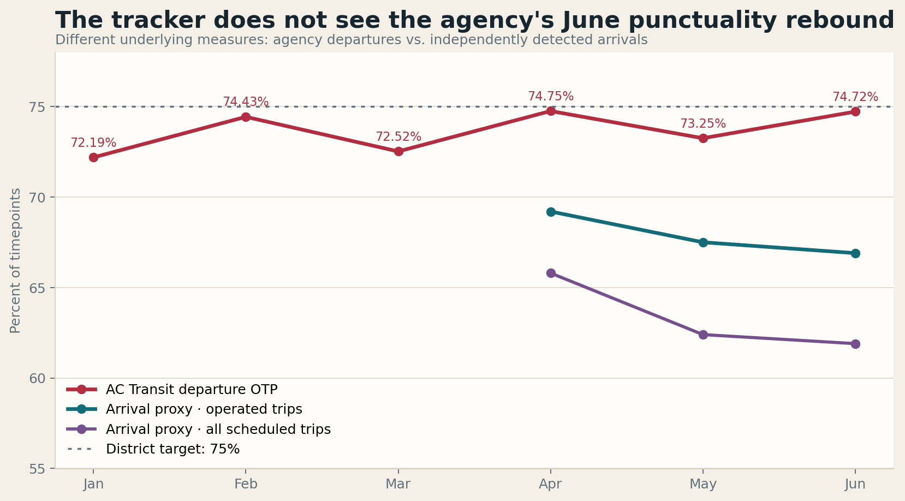
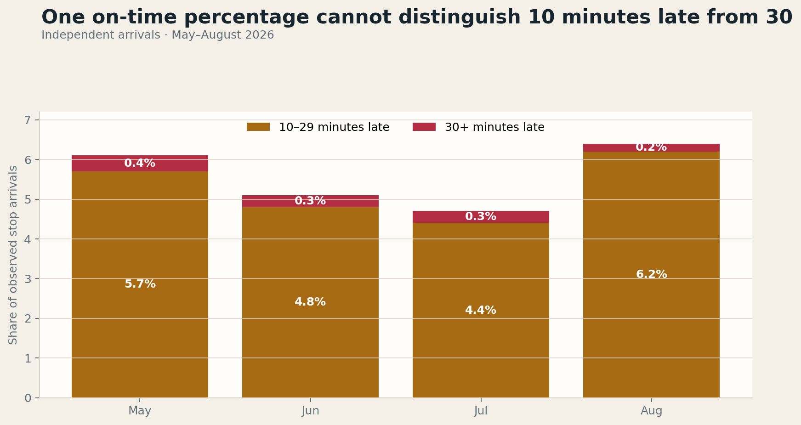
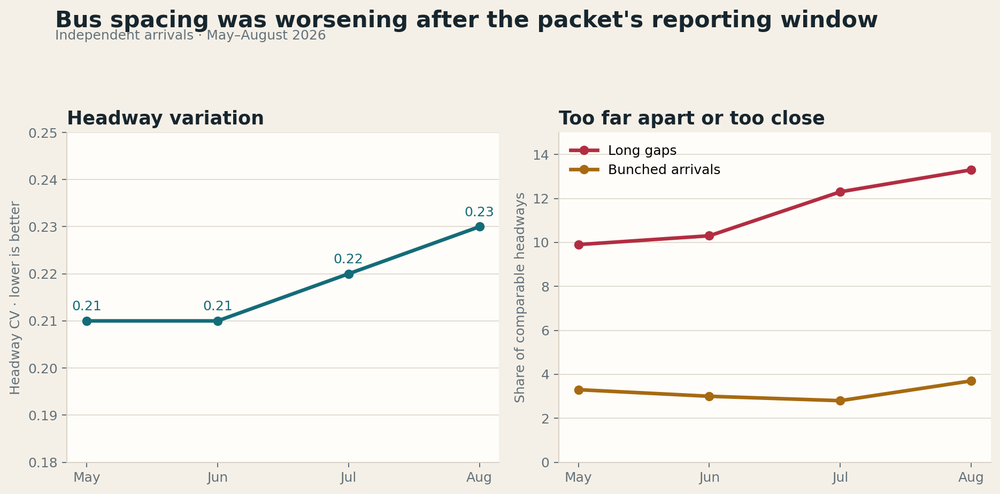

AC Transit’s September 9 Service Reliability Report is unusually direct about the first half of 2026. Service Operated fell every month after February, 32,908 scheduled trips did not run, total operator unavailability remained above 30 percent, and the district’s new first-timepoint measure landed near 33 percent against a 95 percent target.
That is valuable candor. The packet also contains operational facts this independent project cannot reproduce: absence categories, operator headcount, road calls, passenger falls, bus cleanliness, log-on rates, and meal-break reliability. Those measures explain important causes and constraints. Independent rider-experience metrics can extend that picture: a single Service Operated percentage says little about short turns, a binary on-time percentage treats a bus 6 minutes late like one 36 minutes late, and neither measure says whether frequent buses arrived evenly or in pairs after a long gap.
96.18%official Service Operated average, January–June 2026
32,908scheduled trips AC Transit reports as not operated
33.37%first-timepoint departures within the district’s 0–1 minute window
7,715more May–June operated trips in agency records than the tracker detects
What the packet says happened
The operational story is coherent. Service Operated fell from 97.17 percent in January to 94.24 percent in June. Operator headcount fell from 1,253 in March to 1,222 in June, and operator unavailability averaged 32.39 percent against a target below 22.5 percent. Unscheduled unavailability—23.87 percent against a 14 percent target—was the larger problem. Staff attributes 14,416 missed trips, or 44 percent of all trips not operated, to operator unavailability.
The other headline looks better: agency On-Time Performance averaged 73.64 percent, up from 72.87 percent in the prior six months and close to the new 75 percent target. Staff credits February schedule changes and operator familiarity with the Realign network. Yet the monthly pattern is choppy rather than steadily improving.

The new first-timepoint KPI should be useful, but it is not ready to carry the weight of a 95 percent target. Staff found that oversized geofences were incorrectly marking on-time departures late: Hayward BART moved from 0.02 percent in January to 28.31 percent in June after its geofence was adjusted. The metric should stay, with a published data-quality flag for every location, while the remaining geofences are validated.
The district and tracker agree on the slide, not its exact depth
The independent tracker can make a close Service Operated comparison. It counts a scheduled GTFS trip as operated when the public vehicle feed identifies that trip at least once—the same deliberately permissive rule described on the project’s KPI comparison page. This is separate from the stricter rider-facing Trip delivery measure, which requires a detected stop arrival.

| Month | Scheduled trips agency / tracker | Operated trips agency / tracker | Agency SO | Tracker SO | Operated-trip difference |
|---|---|---|---|---|---|
| May | 146,893 / 146,893 | 140,278 / 135,331 | 95.50% | 92.1% | −4,947 |
| June | 141,229 / 141,226 | 133,094 / 130,326 | 94.24% | 92.3% | −2,768 |
The near-perfect agreement on scheduled totals is reassuring: the two systems are looking at essentially the same service plan. The disagreement is in the numerator. Across May and June, AC Transit records 273,372 operated trips; the tracker identifies 265,657, a gap of 7,715 trips.
That gap is not proof that 7,715 additional trips were cancelled. A bus can run while carrying a missing, malformed, or unmatched trip identifier in GTFS-Realtime. The district also had a CAD/AVL reporting defect from March through early May. Conversely, an agency rule can classify service as operated even if riders experienced only a fragment of the trip. The right response is reconciliation: publish the trip-level match rate, the status of every unresolved record, and the health of the public real-time feed.
The broader trend is no longer ambiguous. AC Transit’s public KPI series lists July Service Operated at 89.93 percent; the tracker calculates 90.0 percent. In August the tracker falls again to 89.3 percent. The two systems diverge in May and June, then nearly converge on a much worse July result.
The June punctuality rebound does not appear in the arrival data
The OTP comparison is useful but not like-for-like. AC Transit measures departures at designated timepoints. The tracker independently detects arrivals at interior GTFS timepoints and applies the same one-minute-early to five-minute-late window as a proxy. Origins and final terminals are excluded. This difference can create a stable level gap; the monthly direction is still worth comparing.

| Month | AC Transit departure OTP | Tracker arrival proxy operated trips | Tracker arrival proxy all scheduled trips |
|---|---|---|---|
| April* | 74.75% | 69.2% | 65.8% |
| May | 73.25% | 67.5% | 62.4% |
| June | 74.72% | 66.9% | 61.9% |
*Independent April data begins April 18.
From May to June, the agency series improves 1.47 percentage points. The independent operated-trip proxy worsens 0.6 points. The all-scheduled proxy—which treats timepoints on unobserved trips as failures—also worsens 0.5 points. This may reflect arrivals accumulating delay after an on-time departure, different timepoint definitions, real-time-data gaps, or all three. It does mean the packet should not describe one OTP percentage as the whole rider experience.
The all-scheduled denominator also exposes a structural blind spot. An operated-service punctuality measure can improve while Service Operated collapses because a cancelled trip contributes no late timepoints. Riders do not experience those as separate systems. They experience a bus that does or does not arrive within a usable window.
A bus 10 minutes late is not the same as one 30 minutes late
The packet reports whether a timepoint falls inside a binary window, but not how far outside it falls. The independent arrival distribution can separate moderate disruption from severe disruption. Across May through August, it records 1,156,469 observed stop arrivals between 10 and 29 minutes late and 67,611 at least 30 minutes late. These are stop-level observations, not unique buses—a severely late trip can contribute several late stops.

August is the clearest example. Only 0.2 percent of observed stop arrivals were at least 30 minutes late, but 6.2 percent were 10 to 29 minutes late. Both groups fail a binary OTP test; they impose very different costs on a rider. A useful board scorecard should report at least 5–9, 10–29, and 30-plus-minute delay bands, along with median and 95th-percentile delay.
Neither Service Operated nor OTP measures the wait between buses
Frequent service can look acceptable on both headline measures and still arrive in a pair after a long gap. The packet contains no headway regularity, bunching, long-gap, or expected-wait measure—not even for the twelve high-frequency lines receiving the Trunkline Incentive Program payment.

The tracker compares successive arrivals at the same stop, on the same route and direction, within the same hour. A bunched arrival is less than half the scheduled headway; a long gap is more than one and a half times the scheduled headway. From May to August, Headway CV rose from 0.21 to 0.23, long gaps rose from 9.9 to 13.3 percent of comparable headways, and bunched arrivals rose from 3.3 to 3.7 percent. The spacing penalty—the extra expected wait attributable to uneven arrivals—rose from 0.8 to 1.0 minute systemwide.
Those averages understate the harm on an individual route and hour. The scorecard should publish spacing by route, direction, time of day, and location, then flag repeated two-bus gaps. That is the level at which line managers can act and riders can recognize their experience.
The packet averages away the day and hour
This is a valid and consequential omission. Attachment 2 breaks service out by month, service type, and route, but never crosses performance with weekday versus weekend, hour of day, peak versus evening, or direction. The agency can identify that Line 40 operated 89.9 percent of June service, but a rider cannot learn whether its failures were scattered randomly or concentrated during the same evening window.
Those studies are illustrative, not direct estimates for the packet’s January–June period: one extends beyond June and the other is a four-day August sample. That is the point. Once only a six-month or monthly route average is published, the public cannot test whether a persistent day-and-hour pattern was already present. Future reliability attachments should include route × direction × day type × time-period tables, with enough underlying data to distinguish a recurring failure from a one-off incident.
The trunkline appendix tells a more complicated story
The staff narrative says trunkline Service Operated rose from 93.99 to 96.54 percent after the incentive program, described as a 2.71 percent improvement. Attachment 3 reports a different comparison: 94.29 to 96.18 percent for all program routes, a gain of 1.89 percentage points, or 94.07 to 96.23 for carry-over routes, a gain of 2.16 points. The universes or dates may differ, but the packet does not explain the discrepancy.
More importantly, the same appendix shows that trunkline OTP fell from 71.90 to 70.87 percent. Non-trunkline OTP fell more, from 75.68 to 73.76 percent, so the incentive may have prevented a larger deterioration. That is still different from demonstrating that trunkline service became more punctual or evenly spaced.
Agency Service Operated, January to June. The tracker records 82.3% in June.
Agency Service Operated, January to June. The tracker records 87.6% in June.
Agency Service Operated, January to June. The tracker records 88.3% in June.
Broad pre/post averages and current monthly deterioration can both be true. The board needs both views. A program may improve the odds that a trip is staffed while still failing to prevent bunching, long waits, or worsening conditions at the end of the study period.
“Operated” also needs a completion check
Both the district headline and the tracker’s like-for-like Service Operated calculation are permissive. Once a trip is detected, it counts as operated. The tracker therefore publishes a separate partial-trip measure for observed trips that did not reach their last passenger-boarding stop. In June, 13.0 percent of detected Line 51A trips were partial, as were 6.3 percent on the 1T, 5.0 percent on Line 40, 5.6 percent on Line 57, and 6.5 percent on Line 72.
Some of those findings can result from lost tracking rather than a short turn. That is precisely why a public report should reconcile completion against dispatch and CAD/AVL records. A trip that runs one stop and a trip that completes its route should not be indistinguishable in the board’s only service-delivery percentage.
A better board scorecard
Keep the packet’s operational depth. Add the rider’s sequence of questions.
1
Did the bus run—and finish?
Publish Service Operated with planned and operated counts, partial and short-turned trips, consecutive unobserved-trip windows, and cause codes. Break the results out by route, direction, and time of day.
2
When did it reach riders?
Keep departure OTP and first-timepoint OTP, then add On Time Service Delivered, 5–9, 10–29, and 30-plus-minute delay bands, plus median and 95th-percentile delay. Show operated-only and all-scheduled denominators side by side.
3
How long was the wait?
Report headway deviation—including Headway CV—bunched arrivals, long gaps, expected wait, and spacing penalty for every frequent route. These measures should be mandatory for the trunkline incentive program.
4
Can the public trust the data?
Reconcile the 7,715-trip May–June numerator difference, publish feed completeness and identifier-match rates, document metric revisions, and release machine-readable weekly data with sample sizes and coverage.
The district and independent tracker are not telling opposite stories. Both show a reliability problem that became much worse as spring turned into summer. The disagreement is about magnitude, the June OTP rebound, and what counts as success. Pairing the staff report’s operational facts with rider-experience measures would connect causes and constraints to the wait, uncertainty, and severe delays riders actually experience.